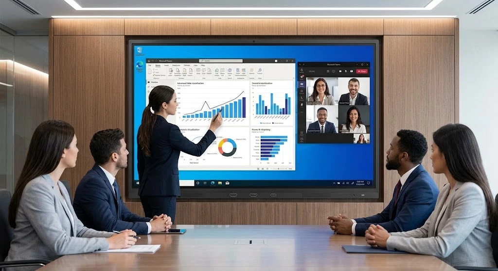

Panduan Memilih OS Smart Board IFP
- Smart board IFP tersedia dengan sistem operasi bawaan Android atau Windows.
- OS Android umumnya lebih ringan untuk kebutuhan dasar menulis dan presentasi sederhana.
- OS Windows menawarkan kompatibilitas lebih luas dengan software perkantoran seperti Microsoft Office.
- Pemilihan OS sebaiknya disesuaikan dengan jenis aplikasi yang akan digunakan sehari-hari.
- Selain OS, pertimbangkan juga ukuran layar, resolusi, dan dukungan teknis dari penyedia.
Apa Itu Smart Board IFP dan Bagaimana Sistem Operasinya Bekerja?
Smart board IFP adalah interactive flat panel yang dilengkapi sistem operasi bawaan, baik Android maupun Windows, sehingga dapat menjalankan aplikasi presentasi atau pembelajaran tanpa perlu perangkat tambahan seperti laptop.
Sistem operasi pada smart board IFP berfungsi menjalankan aplikasi bawaan seperti papan tulis digital, browser, hingga aplikasi pihak ketiga yang diinstal sesuai kebutuhan pengguna, mirip seperti sistem operasi pada komputer maupun smartphone pada umumnya.
Apa Perbedaan Smart Board IFP Berbasis Android dan Windows?
Perbedaan utama antara smart board IFP berbasis Android dan Windows terletak pada jenis aplikasi yang dapat dijalankan serta performa untuk kebutuhan tertentu.
| Aspek | Smart Board Android | Smart Board Windows |
|---|---|---|
| Kecepatan Booting | Umumnya lebih cepat | Relatif lebih lama |
| Kompatibilitas Software | Aplikasi ringan/khusus IFP | Software perkantoran penuh |
| Kebutuhan Cocok | Presentasi dasar, pembelajaran | Pengolahan dokumen kompleks |
| Ketergantungan Perangkat Lain | Minim, berdiri sendiri | Bisa berdiri sendiri atau terhubung PC |
Perbedaan ini membantu pengguna menentukan pilihan sesuai jenis pekerjaan yang akan dilakukan menggunakan smart board IFP tersebut.

Kapan Sebaiknya Memilih Smart Board IFP Android?
OS Android cocok dipilih untuk kebutuhan dasar seperti menulis digital, presentasi ringan, dan penggunaan aplikasi pembelajaran tanpa memerlukan software korporat yang kompleks.
Sekolah atau ruang kelas yang penggunaannya lebih banyak untuk menulis dan menampilkan materi sederhana umumnya sudah cukup terakomodasi dengan smart board IFP berbasis Android, tanpa perlu spesifikasi yang lebih berat.
Kapan Sebaiknya Memilih Smart Board IFP Windows?
OS Windows lebih cocok untuk kebutuhan yang memerlukan software perkantoran penuh, seperti mengolah file Excel atau PowerPoint kompleks langsung di perangkat tanpa laptop tambahan.
Ruang rapat korporat yang dilengkapi dengan meja rapat kantor representatif dan sering menjalankan aplikasi bisnis umumnya lebih diuntungkan dengan smart board IFP berbasis Windows dibanding Android.
Apa Pertimbangan Lain Selain Sistem Operasi?
Selain sistem operasi, pertimbangan lain yang perlu diperhatikan meliputi ukuran layar, resolusi tampilan, jenis dan jumlah port konektivitas, serta ketersediaan garansi dan dukungan teknis dari penyedia.
Kombinasi sistem operasi yang tepat dengan spesifikasi layar yang sesuai kebutuhan ruangan akan memberikan pengalaman penggunaan yang lebih optimal dibanding hanya berfokus pada satu aspek saja.
Kesimpulan
- Pilih smart board IFP Android untuk kebutuhan dasar menulis dan presentasi ringan.
- Pilih smart board IFP Windows jika membutuhkan software perkantoran penuh secara langsung.
- Pertimbangkan ukuran layar dan resolusi selain sistem operasi yang dipilih.
- Cek ketersediaan garansi dan dukungan teknis sebelum memutuskan pembelian.
- Unduh e-katalog kami untuk melihat pilihan smart board IFP Android dan Windows yang tersedia.